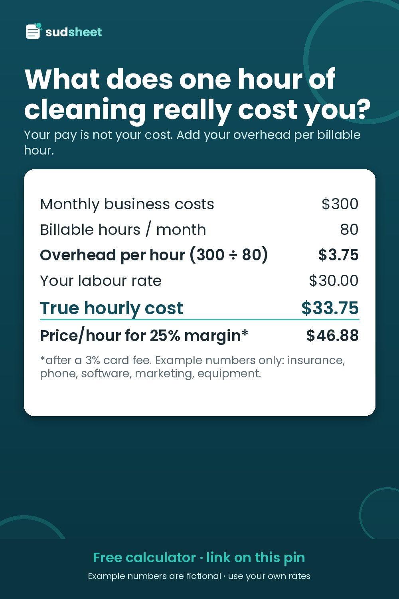

How to Calculate Your True Hourly Cost and Minimum Job Price as a Solo Cleaner

"What should I charge per hour?" is one of the most asked questions by new cleaners. Asking what others charge is useful for checking your local market. But it skips the question that decides whether you make money: what does an hour of your work actually cost you?
All numbers below are a fictional example. Replace them with yours.
1. List your monthly business costs
Include everything you pay to stay in business, even in a month with no jobs:
| Monthly cost (example) | $ |
|---|---|
| Insurance | 60 |
| Phone & internet (business share) | 50 |
| Software & apps | 30 |
| Marketing & advertising | 60 |
| Equipment replacement (vacuums, mops…) | 25 |
| Accounting & bank fees | 25 |
| Other | 50 |
| Total | 300 |
Equipment replacement is the one people forget. A vacuum that dies every 18 months is a monthly cost, whether you set the money aside or not.
Vehicle costs: if you track travel per job (per km or mile), keep fuel and wear there and leave only fixed vehicle costs (payment, insurance) in this table. Don't count the same cost twice.
2. Count billable hours honestly
Billable hours are paid time in clients' homes. Not driving, quoting, texting, laundry or bookkeeping.
A full-time solo cleaner often has far fewer billable hours than hours worked. In this example: 80 billable hours a month.
3. Overhead per billable hour
$300 ÷ 80 = $3.75 per billable hour.
Fewer billable hours means more overhead on each one. That's why a slow month hurts twice.
4. True hourly cost
Labour rate (what you pay yourself) + overhead per hour:
$30.00 + $3.75 = $33.75
If you charge $35 an hour, you're not making $5 of profit. You're making $1.25, and that's before card fees.
5. The hourly price you need
To keep a target margin after card fees:
Hourly price needed = True hourly cost ÷ (1 − target margin − card fee %)
With a 25% margin and a 3% fee: $33.75 ÷ 0.72 = $46.88 per hour of work.
This is a floor for your own planning, not something you have to show clients. Many cleaners quote per job, not per hour. Either way, a job priced below this level per hour of work means you're earning less than you planned.
(Why divide instead of adding 25%? See Margin vs Markup for House Cleaners.)
6. Your minimum job price
Small jobs carry the same drive, setup and admin as big ones. A minimum job price protects you from tiny jobs that lose money.
Work out the cost of your shortest realistic job, including travel and supplies, then price it at your margin. In this example the cost is about $91.75. At a 25% margin after fees that's about $127, so the example sets a $130 minimum.
Any quote that comes out lower gets bumped up to the minimum. Most clients asking for a "quick 1-hour clean" will accept a clear minimum if you state it upfront.
7. Revisit it every few months
Recalculate when:
- insurance or software prices change
- you drop or add clients (billable hours change)
- you raise your own pay rate
- you start taking card payments
If your true hourly cost has gone up and your prices haven't, that's the signal for a price increase. Give clients notice in writing, and check how many clients you could lose and still come out even.
Do it in a spreadsheet
The free Sudsheet Quick Quote uses your labour rate, overhead per hour, supplies, target margin and minimum price to price one job from the home details:
👉 Get the free calculator (Excel + Google Sheets)
The full Sudsheet Quote & Profit Calculator works out overhead per hour and a suggested minimum from your monthly costs, and adds a price-increase helper.
Disclosure: Sudsheet makes these calculators. All numbers are fictional examples. Not financial, tax or accounting advice.
Free house cleaning quote calculator
Type in the home details and get time on site, your job cost and a price at your target margin, plus a one-line quote to paste into your reply. Excel + Google Sheets, no macros.